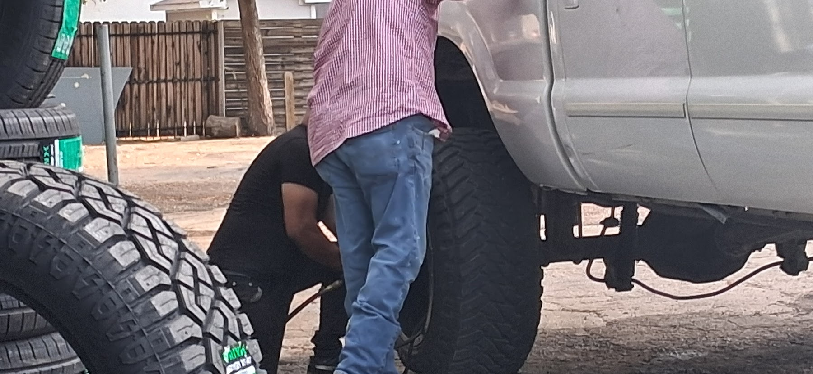
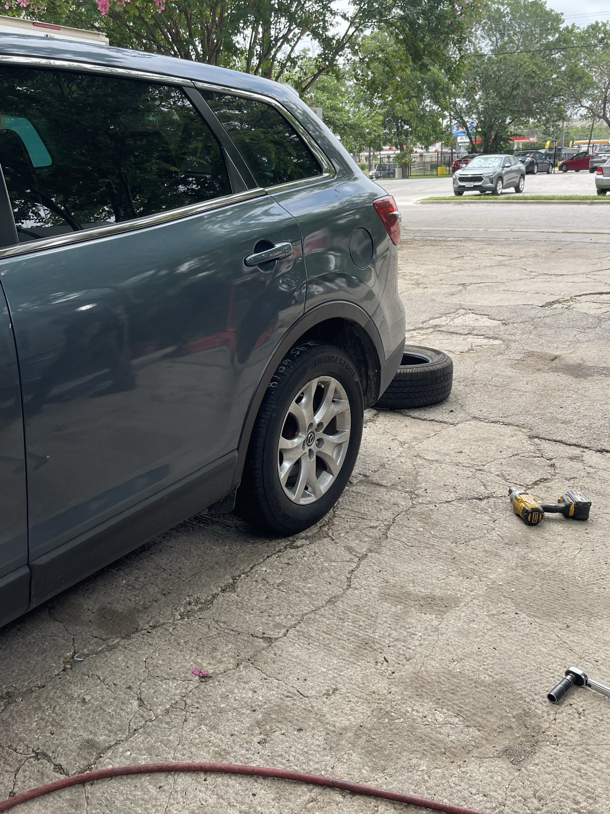
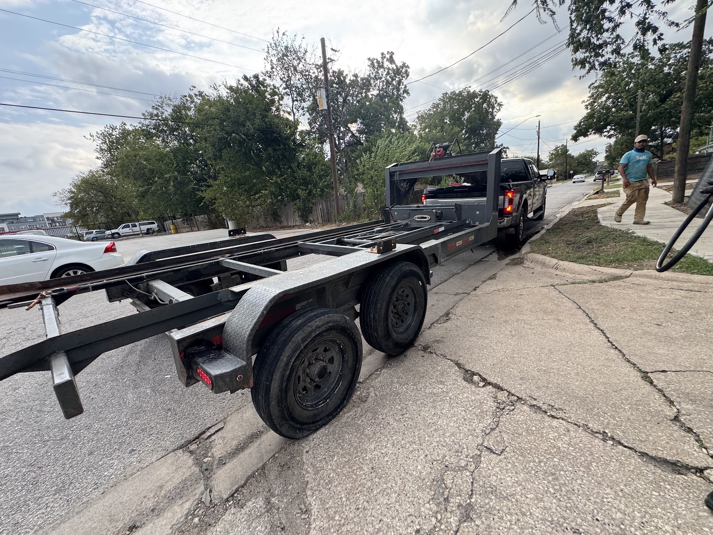
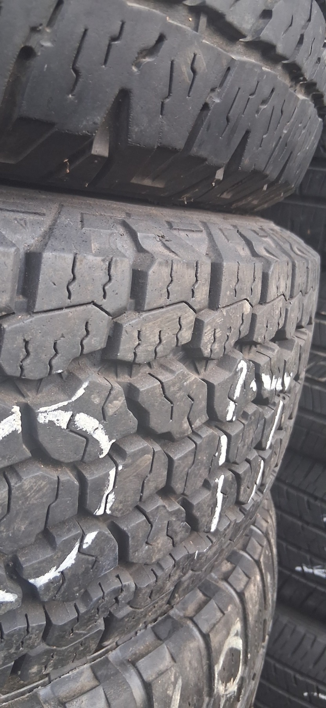

Tigre Del Barrio Tire Shop is a short drive from East Austin, at 1710 Montopolis Dr in southeast Austin. Flat repair, new and used tires, rims, tune-ups, brakes and oil changes, open till 10 PM six nights a week, with the same 4.8-star service drivers across Austin, Montopolis, Del Valle count on.
Nail, screw or a piece of metal in the tread? Pull in and we'll patch it and get you back on the road, even late.
Stacks of new tires out front, including Milestar. Tell us your size and we'll check what's on the lot.
Good used tires with the size chalked right on the sidewall, for when you need one tire or a set.
Rims on display at the shop, plus mounting new or used tires on your wheels.
It's right there on the banner out front: tune-ups, brakes and oil changes.
Lifted trucks and work trailers too. Flats on a trailer axle don't scare us.




Eduardo was fantastic. I pulled in went straight to work. Had a couple Nails in my tire. Got it done in 7 minutes. Definitely coming back if I ever have a problem.
So happy to have found this place after I got a flat tire! They were so friendly and quick to get my tire repaired and put back on! The price was great and the quality of service was amazing! Was able to get me in and out with no hassle!
Exceptional service! Fast, attentive service and professional. They helped me get back on the road quickly after discovering a metal piece had punctured my tire. I would recommend them to anyone in Austin looking for tires, repair or service.
Yes. Tigre Del Barrio Tire Shop serves drivers from East Austin and nearby Austin, Montopolis, Del Valle. Call (737) 368-5380 or ask for a price online.
Call (737) 368-5380 or pull in at 1710 Montopolis Dr. We're open 7 AM to 10 PM Monday to Saturday and 7 AM to 6 PM on Sunday.
Call (737) 368-5380 with your tire size or what happened, or just pull in to 1710 Montopolis Dr. You hear the price before any work starts.
Tigre Del Barrio Tire Shop is rated 4.8 from 57 Google reviews. Customers mention fast flat repairs, late hours and fair prices.
Also serving: Austin · Montopolis · Del Valle · Garfield